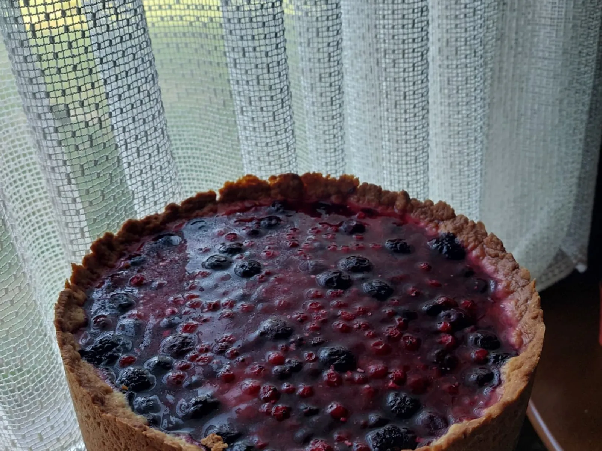

Cake pops

Sastojci
Za oko 20 cake pops
Za kuglice
- 250g mljevenog biskvita (ostaci suhog biskvita)
- 1-2 žlice marmelade od marelice
- 1-2 žlica soka od limuna
- 1-2 žlice soka od naranče (koliko treba da smjesa bude kompaktna)
Za oblage i dekoraciju
- 200g bijele čokolade
- 1-2 žlice ulja (suncokretovo ili kokosovo)
- perlice u boji ili drugi šećerni ukrasi
- štapići za lizalice
Priprema
- Biskvit usitnite u multipraktiku dok ne dobijete fine mrvice (za ovu količinu cake popsa dovoljan je biskvit od 2 jaja). Dodajte marmeladu od marelice te sok od limuna i naranče. Sve dobro izmiješajte dok ne dobijete smjesu koja se lako oblikuje, ali nije ljepljiva. Od smjese pravite kuglice, stavite na tacnu obloženu papirom za pečenje i prekrijte prozirnom folijom. Stavite u hladnjak preko noći ili u zamrzivač na 20-30 minuta dok se potpuno ne stvrdnu.
- Bijelu čokoladu otopite na pari s malo ulja. Svaki štapić za lizalicu prvo umočite u otopljenu čokoladu, zatim ga lagano gurnite do sredine hladne kuglice. Čokolada će zalijepiti kuglicu za štapić. Ohladite u zamrzivaču još 15 minuta kako bi se "ljepilo" stvrdnulo. Važno je da kuglice budu jako hladne prije umakanja u čokoladu.
- Zatim kuglice umočite u čokoladu, lagano je okrenite kako bi se ravnomjerno obložila i pustite da višak čokolade iscuri. Dok je čokolada još mekana, pospite perlicama u boji ili drugim ukrasima po želji.
- Stavite na papir za pečenje da se suše okomito tako da kuglice budu na papiru ili zabodite štapiće u nešto čvrsto, poput stiropora, tako da kuglice budu u zraku. Ostavite da se čokolada potpuno stvrdne, zatim čuvajte u hladnjaku.
Mileramka

Sastojci
Kora
- 250 g glatkog brašna
- 100 g šećera
- 1 jaje
- 1 prašak za pecivo
- 1 vanilin šećer
- 80 g margarina ili maslaca
- malo vrhnja za kuhanje
Fil
- 250 ml mlijeka
- 2 pudinga od vanilije
- 200 g šećera
- 800 g milerama
Preljev
400 g voća
Priprema
- U posudu stavimo brašno, šećer, prašak za pecivo, vanilin šećer, omekšan margarin/maslac, jaje i vrhnje za kuhanje Smjesu izmiješamo i izjenadnačimo pa je razvaljamo na podlozi i stavljamo u kalup. Kalup je najbolje premazati kako se kora ne bi slijepila uz zidove. Smjesu u kalup stavljamo tako da pokrije dno, zidove i vrh zidova kalupa.
- Što se tiče fila, pripremimo puding iz kesice sa malo šećera i mlijeka. Mlijeko stavljamo da kuha a kada prokuha dodajemo u njega puding. Kada se smjesa zgusne, skidamo sa vatre i dodajemo mileram. Sve to izmiješamo i sipamo preko kore u kalup. Preko fila redamo voće i stavljamo na pečenje. Peče se otprilike 70-80 minuta na 160.
- Kada se ispeče i ohladi, napravimo preljev iz kesice i prelijemo preko torte. Ostavimo na hlađenje.
Savjet
Kada ga budete vadili iz kalupa prvo nozem prodjite sa svih strana izmedju kalupa i kore.
Kolač od maline, banane i mascarponea
Poteban alat: blender, mikser, štednjak, pećnica, pjenjača. ovaj recept se isplati raditi paralelno uz nešto jer ima dosta praznog hoda.

Sastojci
Za 6 osoba
Banana biskvit
- 120 g omekšalog maslaca
- 1 šalica šećera
- 1 paketić vanilin šećera
- 2 žlice ruma
- 1/2 cimeta
- 1/4 čajne naribanog muškatnog orašćića
- 1/2 kiselog vrhnja
- 3 prezrele banane
- 1 šalica glatkog brašna
- 1 šalica mljevenih bijelih badema
- 1 čajna sode bikarbone
- malo soli
Voćna "krema"
- 600 g smrznutih malina
- 20 g želina
- nekoliko žlica šećera po ukusu
Mascarpone krema
- 4 žumanjka
- 100 g šećera u prahu
- 500 g mascarpone sira
- 250 ml vrhnja za šlag
Priprema
Banana biskvit 180° 45 minuta
Banane i vrhnje sam izblendala, ja sam imala 2 manje zrele (crna kora) i jednu nezrelu bananu. Pomiješala sam sve sastojke (i blendane banane) i miksala do homogenosti. Pekla sam u pećnici na 180° otprilike 45 min u 2 manje staklene posude. Provjerila sam čačkalicom.
Voćna krema
Izblendala sam 600g smrznutih malina i vode (gotovo da ih prekrije u posudi). U lonac sam stavila 20 g pektina, ~2 dcl vode (u manjem loncu jedno 3 cm visine) i 3 žlice šećera. Kad je to zakipilo, dodala sam maline i miješala dok ponovo nije zakipilo. Usput sam dodala još malo šećera toliko da mi je ta smjesa mrvicu preslatka sama po sebi. Pustila sam da se malo ohladi, višak pjene bacila, i prelila preko rashlađenog biskvita.
Mascarpone krema
U metalnoj zdjeli sam izmiksala 4 žumanjca i 100 g šećera u prahu. Na štednjaku sam složila vodenu kupelj i kuhala smjesu na pari. Miješala sam dok nije promijenilo teksturu i pjenavu ccc 15 min. U malo rashlađenu masu dodala sam 500g mascarpone sira i miksala. U drugoj posudi sam izmiksala šlag. Spojila sam te dvije smjese. Voće na biskvitu mora biti želirano, kompaktno prije nego što se doda mascarpone krema.
Posluživanje
Ohladiti preko noći (8 sati)